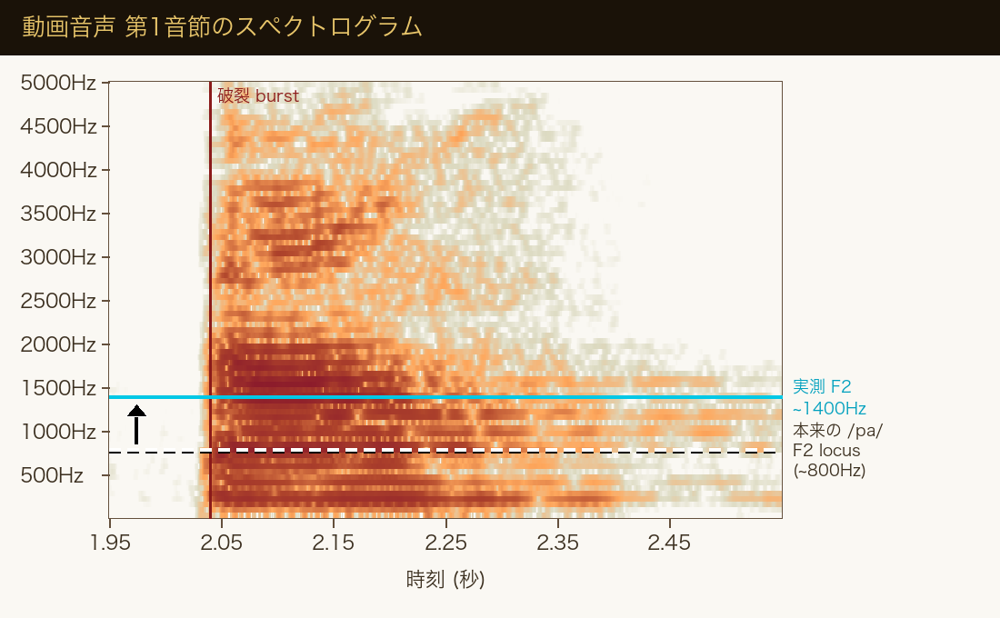
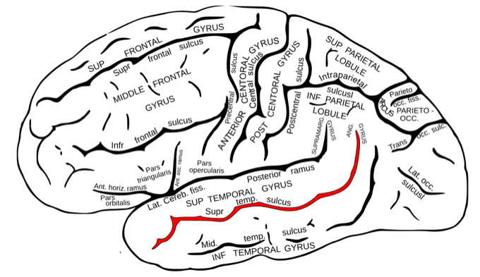

知覚・錯覚
音声「ba」に、口の動き「ga」を重ねる。それだけで、多くの人には「da」と聞こえる。耳に届いた音は、顔を見ると別の音に書き換わる。
McGurk と MacDonald が Nature 誌に「Hearing lips and seeing voices」を発表。偶然の録音ミスから、視覚が聴覚を書き換えていることが明らかになった。
同年、ベトナム社会主義共和国が成立。モントリオール五輪。毛沢東死去。米大統領選でカーターがフォードを破った。
発表から半世紀。この48年で 4,800本以上の論文がこの効果を引用してきた。それでも「視覚が聴覚を書き換える仕組み」は、今なお完全には解明されていない。
ビデオ通話で、音声と映像が数百ミリ秒ズレていることがある。相手の口の動きと声が合わない。すると、なぜか言葉が頭に入ってこない。理解できないわけではない。聞き取れないわけでもない。ただ、どこか違和感があって、会話に集中できなくなる。
私たちは気づかないうちに、話し手の口を見ている。その動きを音と重ね合わせて、ひとつの「言葉」として聞いている。耳と目は、別々に働いているのではない。聞くという行為の中に、見るという行為が織り込まれている。
聞こえているという体験は、耳から入った音だけで決まっているわけではない。
同じ音声でも、重なる口の動きが変われば、聞こえ方は変わる。聴覚は視覚と分離していないという事実を、自分の耳で確かめる。
1976年の春、サリー大学の発達心理学研究室で、ハリー・マクガークと助手のジョン・マクドナルドは、乳児の言語知覚についての実験を準備していた。技術者に依頼したのは単純な作業だった——音声 [ba] を、口が [ga] を発音している映像に、手違いで重ねて再生した。二人が顔を見合わせたのは、その直後である。映像を見ながら聴くと、はっきりと [da] に聞こえる。目を閉じて音だけを聴くと、元どおり [ba] だった。
二人は実験を組み替えた。成人51名、3〜5歳児21名、7〜8歳児28名を集め、同じ映像を見せ、何に聞こえたかを記録した。結果は衝撃的だった。映像を見ながら聴いたとき、成人の98%が「違う音」を報告した。音声 [ba] + 映像 [ga] の組み合わせでは、大多数が「da」または「tha」と答えた。聴覚はそれまで、視覚とは独立した感覚だと信じられてきた。その前提が崩れた瞬間だった。
マクガーク効果の基本構造。音声 /ba/ と視覚 /ga/ を脳が統合した結果、どちらでもない /da/ が聞こえる。/ba/(唇を閉じる) と /ga/(喉奥) の中間にあたる /da/(舌先) が、視覚と聴覚の折衷案として出力される。
発見は意図したものではなかった。マクガークは乳児が母親の顔と声をどう結びつけるかに興味があった。視覚が聴覚を「書き換える」現象を探していたわけではない。しかし、技術者がテープのトラックを誤って組み合わせたおかげで、半世紀にわたって引用され続ける論文が生まれた。Natureへの投稿は1976年7月、受理は11月、掲載は同年12月23日。タイトルはHearing lips and seeing voices——「唇を聴き、声を見る」。
"We present here a new phenomenon which, as far as we are aware, has not hitherto been reported. It reveals a previously unsuspected influence of vision upon speech perception."
ここに、これまで報告されたことのない新しい現象を示す。視覚が音声知覚に与える、これまで想定されていなかった影響が明らかになる。
— McGurk & MacDonald, Hearing lips and seeing voices (Nature, 1976)
ハリー・マクガーク (1936–1998)
British developmental psychologist
スコットランド生まれの発達心理学者。サリー大学で乳児の音声知覚を研究していた1976年、偶然の録音ミスからクロスモーダルクロスモーダル (Cross-modal)
複数の感覚（視覚・聴覚・触覚など）をまたいで情報が統合される現象。モダリティ間の相互作用。錯覚を発見した。助手のジョン・マクドナルドとの共著論文は1976年12月のNature誌に掲載。後にストラスクライド大学の児童発達研究センター長を務めたが、1998年に62歳で死去。本人はこの発見を「娘の言語発達を観察する副産物だった」と回想している。
✗ よくある誤解
錯覚だと知れば、本来の音が聞こえるようになる。
✓ 実際は
知識があっても効果は消えない。目を開けている限り、脳は視覚を音に織り込み続ける。解けないのが特徴。
✗ よくある誤解
耳が良い人ほど、視覚に影響されずに聞き取れる。
✓ 実際は
原論文では健聴の成人98%が融合を経験した。聴覚能力の高さと影響の受けやすさは、直接の関係がない。
✗ よくある誤解
訓練された音楽家なら、耳を独立させて聴ける。
✓ 実際は
2019年の研究で、熟練音楽家もマクガーク効果を経験することが確認された。視聴統合は意識の下で起きる。
マクガーク効果は、説明を読むだけでは腑に落ちない。自分の耳で確かめる必要がある。以下の McGurk Lab には、マクガーク効果の研究(Proverbio et al., 2016)で実際に実験刺激として使われた動画を埋め込んでいる。この動画は Wikipedia 英語版・中国語版の McGurk 記事でも公式採用されている定番デモ刺激だ。まず「目を閉じて聴く」で音声だけ確認し、次に「映像あり で見る」で同じ動画を見ながら聴き直してほしい。同じ音声なのに聞こえ方が変わる瞬間が、マクガーク効果の体験だ。
ヘッドホン推奨。動画は Wikipedia 英語版の McGurk 記事で公式採用されている定番刺激で、Proverbio et al. 2016 論文に収録された実験刺激(音声 /pa/ に口 /ka/ の発音映像を重ねたもの)。重要: この音声トラックは論文著者が研究目的で意図的に子音情報を弱めた「曖昧な音」に加工されている。そのため、目を閉じて聴いても人によって /pa/・/ta/・/ba/・/fa/ などに聞こえる。これはバグではなく、視覚の影響が働きやすいように設計された実験刺激の特徴。Step 1 と Step 2 を順番に進めてください。
動画のライセンス: Proverbio A, Massetti G, Rizzi E, Zani A (2016) Skilled musicians are not subject to the McGurk effect, Scientific Reports 6:30423 の補足動画 S2。CC BY 4.0(改変なし)。再生できない場合は Chrome/Firefox でお試しください。
自然な肉声での McGurk 効果も体験したい方へ: 上記の研究刺激は子音情報を弱めた曖昧な音声を使うため、結果がばらつきやすい特徴があります。自然に録音された肉声ベースのデモ映像は、BBC Horizon の番組 "Is Seeing Believing?" に収録されており、YouTube で視聴可能(著作権は BBC に帰属、外部サイトへ移動します)。加工されていない自然発話での体験と本 Lab の結果を比べてみてください。
Step 1 と Step 2 を試してみて、どうだっただろうか。目を閉じて聴いたときと、映像を見ながら聴いたときで、同じ音声なのに聞こえ方が変わった——もし変わったなら、それがマクガーク効果を自分の耳と脳で体験した瞬間だ。融合は自分で「書き換えるぞ」と意識して起きるわけではない。目を開けているだけで、視覚情報が勝手に聴覚を上書きする。意識がそれを検知することすらできない。

📊 図の見方(※筆者による簡易解析)
観察から示唆されること(100%の確定ではない)
Q1. 原論文 (McGurk & MacDonald 1976) で、健聴の成人が /ba/音 + /ga/口 を見せられたとき、視覚の影響を受けて「本来とは違う音」を報告した割合は?
Q2. 日本語を母語とする聴者と、英語を母語とする聴者。マクガーク効果(融合知覚)を強く体験するのはどちらか?
音は鼓膜を震わせて蝸牛に届き、有毛細胞が電気信号に変換する。ここまでは純粋な聴覚処理だ。映像は網膜の光受容細胞から、視覚野(後頭葉)に送られる。別々の入力、別々の経路。しかし、この2つがどこかで合流するからこそ、マクガーク効果は起きる。合流地点はどこにあるのか——fMRIと経頭蓋磁気刺激経頭蓋磁気刺激 (TMS)
頭蓋外から磁気パルスを当てて、特定の脳領域の活動を一時的に抑制する手法。神経科学で因果関係を調べるのに使われる。(TMS)が、答えを教えてくれる。

◀ 前 後 ▶左大脳半球の側面図。赤くハイライトされているのが上側頭溝(STS)——側頭葉の上・中2つの回(Superior / Middle Temporal Gyrus)を分ける溝だ。耳からの音情報は側頭葉上部の聴覚野へ、目からの視覚情報は後頭葉の視覚野へ入り、両者がこのSTSで合流する。
原図: Henry Vandyke Carter, Gray's Anatomy (1918) — Public Domain / STSハイライト: Wikimedia Commons user "Was a bee" (Public Domain)
耳からの音と目からの口の動きは、別々の経路で脳に入る。しかし意識に上る前に、上側頭溝(STS)で一度統合される。STSをTMSで一時的に止めるとマクガーク効果が消える(Beauchamp 2010)——視覚が聴覚を書き換える中継地点だ。
上側頭溝上側頭溝 (Superior Temporal Sulcus, STS)
側頭葉の外側を前後に走る深いしわ。顔認識・生物的動き・音声の統合など、社会的情報処理の中心的ハブ。(STS) は、脳の側頭葉にある深いしわで、顔の動きや生物的な運動を処理する場所として知られていた。2010年、ボーシャンらは、被験者が不一致動画(/ba/音+/ga/口)を見ている最中にTMSでSTSの活動を抑制した。結果、マクガーク効果の発生率はほぼ半分に落ちた。STSを黙らせると、視覚は聴覚を書き換えなくなる。逆に一致動画(/ba/音+/ba/口)の認識には影響しなかった。STSは、クロスモーダルな錯覚の司令塔だった。
音が「聞こえた」と意識するまでの3段階。意識化されるのは Step 3 の最終結果だけで、Step 2 でどう修正されたかは自覚できない。だから錯覚だと知っていても効果は消えない——書き換えは自覚の外で起きている。
ここで重要なのは意識のタイミングだ。耳に届いた音が鼓膜を揺らしてから、意識に「何か聞こえた」と上るまで約200ミリ秒かかる。この200msの中で、脳は耳と目からの情報を突き合わせ、ズレていれば片方を書き換える。視覚は口の動きという強い文脈情報を持っているため、優先度が高い。結果として、意識に上る音は「耳に届いた音」ではなく「視覚で補正された音」になる。
"As far as the speech brain is concerned, the auditory and visual information are never really separate."
話すための脳にとって、聴覚情報と視覚情報は決して切り離されていない。
— Lawrence Rosenblum(カリフォルニア大学リバーサイド校・心理学教授、『See What I'm Saying』著者)
もうひとつ、興味深い事実がある。融合の強さは、人によって驚くほど違う。同じ /ba/音+/ga/口 の動画を見せても、融合率が0%の人から100%の人までが存在する。健康な成人の中でも、この分布は広い。発達段階による差もある。5〜9歳の子どもは視覚の影響が弱く、音声のまま「ba」と聞き取ることが多い。視聴統合は、年齢とともに深まる技能だ。
個人差と文化差の存在は、マクガーク効果が固定した「仕組み」ではないことを示している。誰もが同じ割合で視覚に頼っているわけではない。幼少期の言語環境、顔を見る習慣、おそらくは眼球運動の癖まで、さまざまな要因がこの統合の強さを調整している。「脳は視覚を優先する」は平均的な話であって、個々人にそのまま当てはまるわけではない。
1954
ススマンのダイコティック実験
両耳に別々の単語を流すと片方しか聞き取れない「選択的注意」の研究が始まる。聴覚は独立の感覚だとされていた。
1976
McGurk & MacDonald — Nature誌に「Hearing lips and seeing voices」
音声/ba/ + 口/ga/の映像で成人の98%が「da」と報告。視覚が聴覚を書き換える初の実証。偶然の録音ミスが出発点だった。
1991
Sekiyama & Tohkura — 日本語話者の特殊性
日本語を母語とする被験者でマクガーク効果が弱いことを報告。言語・文化によって視覚依存の度合いが違うことが判明した。
2005
Calvert & Thesen — fMRIでSTSの関与を特定
マクガーク融合が起きているとき、脳のどこが活動しているかを画像で観察。上側頭溝が有力候補として浮上した。
2010
Beauchamp et al. — TMSで因果関係を証明
被験者がマクガーク刺激を見ている最中にSTSをTMSで抑制。融合率がほぼ半分に落ち、STSがこの錯覚の因果的中枢であることが示された。
2016
YouTubeとTikTokで拡散
BBC Horizon「Is Seeing Believing?」(2010) の /ba/-/fa/ デモ映像をきっかけに、視聴覚錯覚の動画が数千万回再生される。大衆文化への浸透。
2018
40年レビュー — Alsius et al.
発見から40年のレビューが刊行。研究蓄積は膨大だが、個人差・文化差の本当の原因はいまだ確定していないと結論される。
2023
AI音声モデルへの応用
Audio-Visual Speech Recognition が実用段階に。騒音下では口の動きを併用した方が認識精度が上がる——マクガーク効果の工学的応用。
耳が音を拾い、脳が意味を付ける——それだけなら、話はシンプルだ。しかし現実には、脳は耳だけの信号を信じていない。話し手の口を見ていれば、口の動きを音素音素 (Phoneme)
言語の意味を区別する最小の音単位。/b//g//d/ のような子音はすべて音素。耳が受け取る物理音から、脳が抽出する分類ラベル。と突き合わせ、ズレていれば視覚を優先して音を書き換える。聞こえるという体験は、顔を見るという行為と、分かちがたく結びついている。
この発見が意味するのは、単に「視覚が強い」ということではない。聴覚という独立した感覚は、実のところ存在しないかもしれない、ということだ。進化の時間尺度で、人間は常に話し相手の顔を見ながら言葉を聞いてきた。耳と目は、常にセットで働く前提で設計されている。電話やラジオのように、音声だけを切り離して届ける技術は20世紀の発明に過ぎない。脳は、それに合わせて進化していない。
同じ理由で、マスクをつけた相手の声は聞き取りにくい。コロナ禍で多くの人が経験した通りだ。音量は変わっていない。なのに、理解の負荷が上がる。口の動きが見えないせいで、脳は普段使える情報源を一つ失い、耳だけで音を組み立てなければならない。「聞こえているけれど聞き取れない」という奇妙な感覚の正体は、ここにある。
◆ 文化・メディアへの登場
BBC Horizon — "Is Seeing Believing?" (2010)
科学ドキュメンタリー番組がマクガーク効果を扱い、口を「Fa」と動かしながら音声「Ba」を流すクリップを放映。視聴者はまず「Fa」と聞き、目を閉じて再生すると「Ba」に切り替わる体験を一斉に経験した。YouTubeに転載され数千万再生を記録。
映画吹替の違和感の正体
外国映画の日本語吹替で、役者の口の動きと日本語のセリフがズレていると不自然に感じる。マクガーク効果は失敗した吹替で最もよく観察される——脳が口と音を整合させようとして、違和感が残留する。
"Yanny / Laurel" (2018)
2018年、同じ音声が人によって「ヤニー」と「ローレル」に聞こえ分かれる錯覚がSNSで拡散。マクガーク効果と厳密には別現象だが、「同じ物理入力で人によって聞こえる音が違う」という点で、同じ系譜の驚きが大衆に届いた瞬間だった。
音声認識AIへの工学応用
TeslaやGoogleの音声認識は、カメラを併用するAudio-Visual Speech Recognitionが研究されている。騒音下では口の動きを加えた方が精度が上がる。人間の脳が1976年に示していた戦略を、機械も取り入れつつある。
マクガーク効果は、意識の端にある装置を可視化する。意識に上る音は、世界の物理的な事実ではなく、複数の感覚を突き合わせた後の「結論」だ。私たちは生のデータを聞いていない。耳と目が共同で作った編集済みの出力を、「聞こえたもの」として受け取っている。世界を直接知覚しているという感覚そのものが、実のところ幻影に近い。
Hearing lips and seeing voices
マクガーク効果を報告した原論文。わずか3ページだが、成人・子ども合わせて100名の実験データで視覚が聴覚を書き換えることを示した。引用数4,800回超。
日本語話者でマクガーク効果が弱く出ることを初めて示した研究。母語の音韻特性または文化的要因が視覚統合の強度に影響することを示唆した。
TMSを使って上側頭溝(STS)の活動を一時的に抑制。マクガーク錯覚の発生率がほぼ半分に落ちた。STSがこの錯覚の因果的中枢であることを示した決定的な研究。
発見40周年のレビュー。マクガーク効果の歴史、現状、残された問いを俯瞰。個人差・文化差の原因が未解明であることを率直に認めている。
The threshold for the McGurk effect in audio-visual noise decreases with development
5歳から成人までの発達過程を追跡。視覚統合は年齢とともに強化され、5〜9歳では音声優位、10代以降は大人並みになることを示した。
Rethinking the McGurk effect as a perceptual illusion
マクガーク効果の個人差が非常に大きいことを強調し、「錯覚」としての汎用性を問い直した論文。融合率0%〜100%の幅広い分布を報告。
Skilled musicians are not subject to the McGurk effect — Supplementary Videos
本記事の McGurk Lab に埋め込まれている動画は、この論文の補足動画(Supplementary Video S1/S2)を使用。Wikimedia Commons 経由、CC BY 4.0 ライセンス(改変なし)。後続研究(Politzer-Ahles & Pan, 2019)はこの「音楽家は効果を受けない」という結論を再検証して反証しており、現在は音楽訓練による免疫はないというのが主流の見解。
e. Tamaki